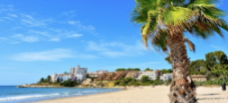
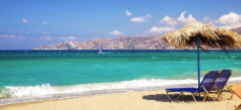

Paskutinės minutės atostogos Ispanijoje, Salou! Skrydis iš Vilniaus, bagažas, pervežimai ir 7 n. viešbutyje su pusryčiais ir vakarienėmis - 379 €! Plačiau...
Kreta

Rugsėjį keliauk į vaizdingąją Kretą! Skrydis iš Vilniaus, bagažas, pervežimai ir 7 n. viešbutyje su „viskas įskaičiuota“ - 499 €! Plačiau...